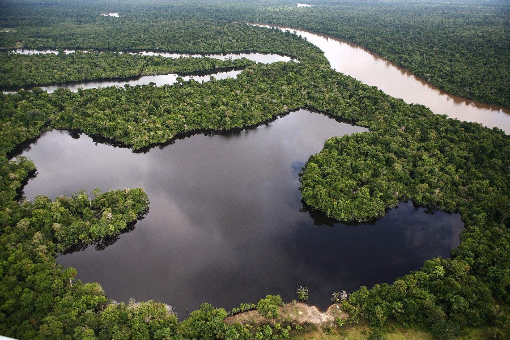
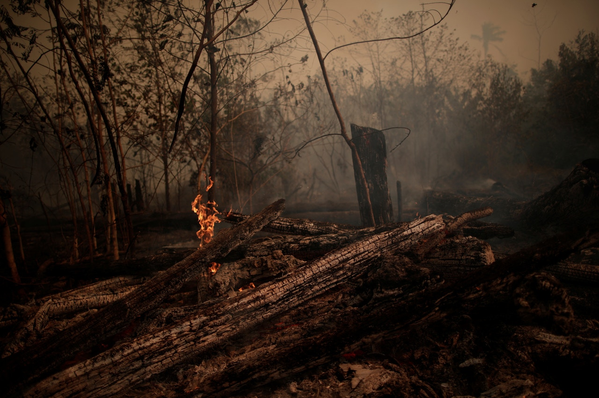
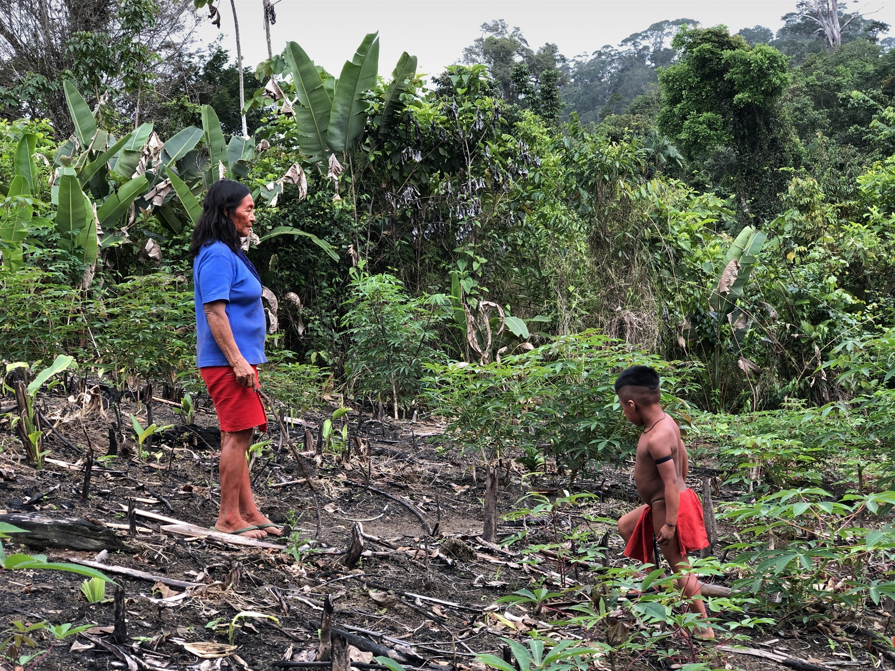

全球一成物種家園被毀 專家剖析恢復雨林兩大關鍵

掀生態災難 NASA發布圖片揭一氧化碳擴散全球
發展犧牲環境 世人寶貴的一課

亞馬遜最大的希望?一位女性土著酋長正在執行一項拯救巴西森林的任務

關於亞馬遜 亞馬遜雨林又被稱為地球之肺
大火引發原因 每年7至11月，亞馬遜雨林大火都會重演
大火影響 自然的情況下，火災是森林規律更新的一部分
後續處理 企業的工廠式農場 產量仍遠遠不能滿足人類對牛排、漢堡的口腹之欲